알고 보면 더욱 재미있는 조조 래빗 (Jojo Rabbit) 관련 몇가지
게시: 2020-05-25T06:30:39+09:00
* 이 포스팅에는 영화 조조 래빗에 대한 아주 약간의 스포일러가 들어있을 수 있습니다.
1. 스칼렛 요한슨은 바지를 입는다
이 영화의 의상 담당은 루비오(Mayes C. Rubeo)라는 멕시코 계통의 여자분인데, 아카데미 어워드에서 의상 부문 후보에 올랐고 아쉽게 수상은 못했습니다. 그러나 이 분은 후보에 오른 것만으로도 굉장한 영광을 얻은 것이고, 실제로 라틴 계열 분들 중에서는 최초로 이 상 후보에 올랐다고 합니다. 이 분 인터뷰에 따르면 극중에서 조조의 당차고 용감한 엄마 로지(Rosie) 역의 스칼렛 요한슨과 직접 상의해가면서 로지의 의상을 디자인했답니다. 영화 속에서는 엄마 로지의 직업이 나오지는 않지만, 루비오는 로지가 뭔가 진보적이고 패션 감각이 있는 직업, 가령 무대 관련 일을 하는 것으로 가정했다고 말했습니다.
뜻 밖에, 특히 신경쓴 부분은 바로 스칼렛 요한슨의 바지였습니다. 저는 영화 보면서 딱히 눈치 채지는 못했는데, 루비오와의 인터뷰 기사를 읽고서야 깨달았지요. 영화 속에 등장하는 여자들은 모조리 치마를 입고 있는데, 바지를 입은 것은 딱 2명, 로지(요한슨)과 주인공 엘사(토마신 분)입니다. 당시엔 여자들도 슬슬 바지를 입기 시작했지만, 아직 대부분의 여자들에게 바지는 낯선 패션으로서 매우 진보적이고 패션을 아는 여자들만 바지를 입었다고 합니다. 루비오는 바로 그 점을 강조하기 위해서 로지와 엘사에게만 바지를 입힌 것이더라고요.
여자가 바지를 입는 것이 받아들여진 것이 의외로 그렇게 오래된 일이 아닙니다. 나폴레옹 시대 때 스페인에서 프랑스군을 패배시킨 영국군이 포로로 잡은 프랑스군 중에 기병대 군복을 입은 프랑스 여성들을 발견하고 놀랐다고 하지요. 이건 프랑스 여성들이 군복을 입고 군부대를 따라다녀서 놀란 것이 아닙니다. 당시 군대는 어느 나라나 다 여성들을 데리고 다녔습니다. 문제는 바지였습니다. 당시 기병대 군복 바지는 정말 타이트한 것이었거든요. 제가 좋아하는 미국 포크송 가수 Joan Baez는 1950년대에 보스톤 대학을 잠깐 다녔는데, 곧 중퇴해버렸습니다. 어느 유튜브 댓글 중에 본인이 같은 시절 보스톤 대학을 다녔다는 노인의 주장에 따르면, 바에즈가 보스톤 대학을 관둔 것은 사실 퇴학 당한 것이며, 이유는 바에즈가 바지를 입고 다녔기 때문이라고 합니다. 거기에 대한 대댓글로 '난 57년 생인데, 고등학교 때 몹시 추운 겨울에도 여학생들은 치마를 입고 다녀야 했고 그걸 보면서 여자들은 정말 춥겠다고 생각했다' 라고 말하는 댓글도 있더군요.
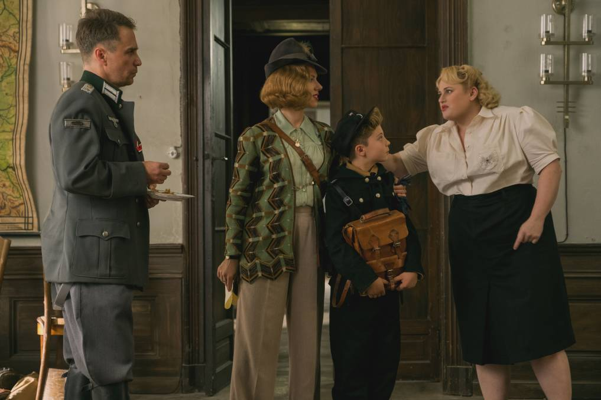
(로지는 바지를 입지만, 우락부락한 여걸 프로일라인 람(Fraulein Rahm, 미스 람)은 항상 치마만 입습니다.)
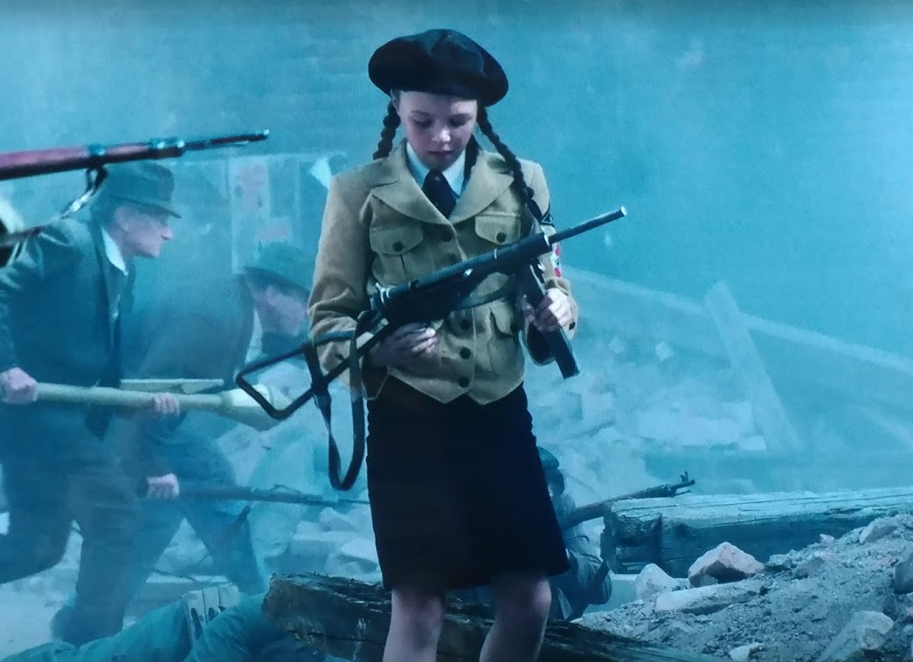
(히틀러 유겐트 소속 소녀도 제대로 쏠 줄도 모르는 기관단총을 들고 전투에 나서면서도 치마를 입습니다.)
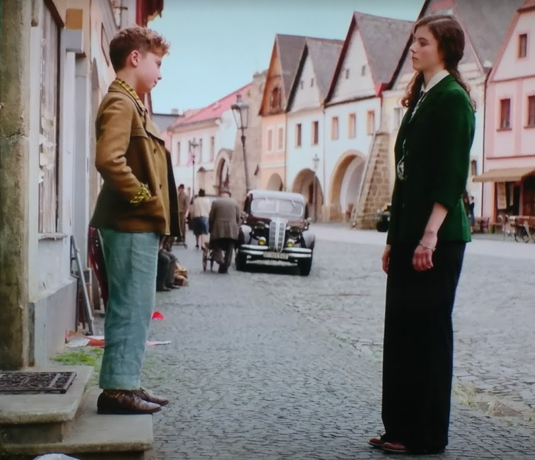
(엘사는 나찌에 고분고분한 독일 소녀 행세를 할 때 이외에는 항상 바지를 입지요.)
2. 요즘은 왜 저런 구두를 안 만드나
와이프가 영화를 보다 말고 로지의 의상 중에서 가장 눈에 띄는 부분으로 코멘트를 한 것은 바로 저 구두였어요. 구두 진짜 이쁘다면서, 왜 요즘은 저런 구두를 안 만드는지 모르겠다고요. 이건 원래 여자용 구두가 아니라 남자용 구두인데, 저렇게 옥스포드식으로 구두끈이 달리고, 가장 특징적으로는 두가지의 매우 대조되는 색상의 가죽을 조합해서 만든 구두를 'spectator shoes' 혹은 'co-respondent shoes' 라고 한답니다. 19세기 말에 유행이 시작되어 1920~1930년대까지 유행했다고 하니까, 시대에 꽤 잘 맞는 소품이었던 셈이지요.
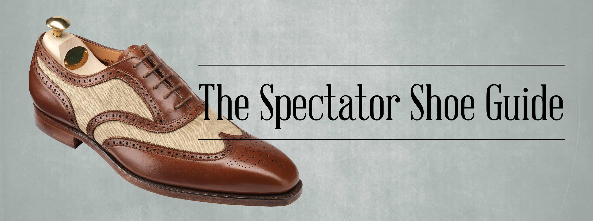
(원래 남성용 구두 맞습니다. 영국에서 크리켓용 구두로 만들어졌다는 설이 있습니다.)
Co-repsondent라는 것은 이혼 소송에서 부정한 배우자와 바람을 피운 상대를 뜻합니다. '함께 연락을 받는 사람'이라는 뜻의 단어가 그런 의미를 가지게 된 것은 이혼 관련 재판 소환장에서 바람 피운 상대도 그 관련 서류를 송부 받기 때문이라고 하네요. 확실히 저런 스타일의 구두는 너무 화려해서, 점잖은 사람들이 신기에는 부적합하다고 손가락질 받는 분위기였고, 주로 멋쟁이 한량들이 신는 구두였답니다. 그러다보니 불륜에 의한 이혼에 휘말린 바람둥이와 연계되어 저런 불명예스러운 이름을 얻었다고 합니다. 물론 로지 같은 앞서 가는 멋장이는 신을 만한 구두입니다만, 요즘에는 만들지 않는 이유가 있는 셈입니다.
그런데 저 구두가 그렇게 슬픈 사건을 예고하는 소품으로 사용될 줄은 정말 몰랐습니다. (더 자세한 건 스포일러라서 노 코멘트...)
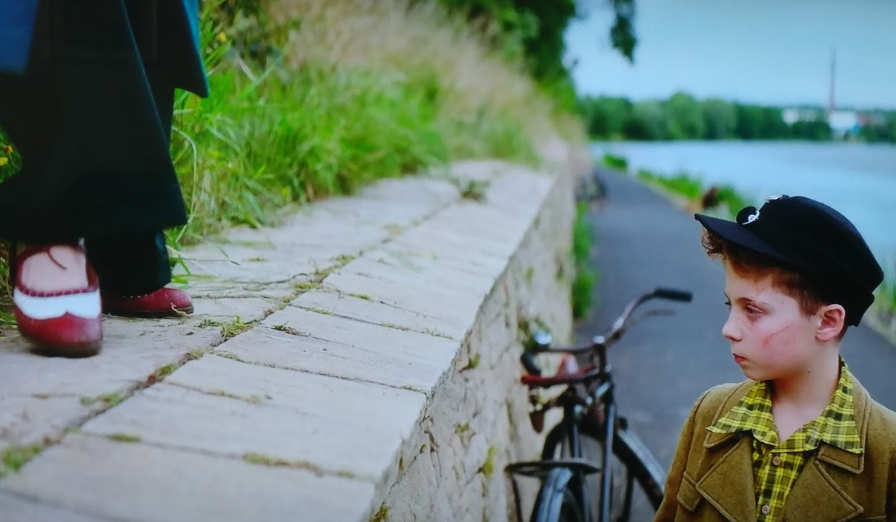
(이 호숫가 장면은 원래는 정말 따뜻하고 유쾌한 부분인데, 이게 나중에 그렇게 슬픈 장면이 될 줄은 몰랐어요.)
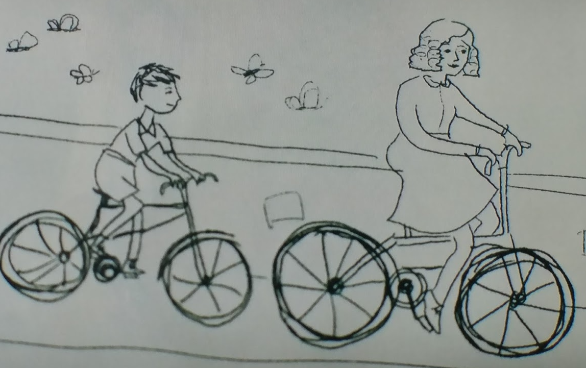
3. 클렌젠도르프(klenzendorf) 대위의 핑크 휘장
영화 속에서 히틀러 유겐트, 그러니까 히틀러 유소년단을 이끄는 클렌젠도르프 대위는 명목상으로는 나찌에 충성스러운 독일군 장교이지만 언행을 보면 처음부터 매우 비아냥거리는 태도를 보여줍니다. 아마 영화를 보시면 다들 눈치 채시겠지만 클렌젠도르프는 항상 붙어다니는 부하 핀켈(왕좌의 게임에서 테온 그레이조이로 나왔던 알피 알렌 분)과 비밀스러운 동성애 관계입니다. 클렌젠도르프는 매사 비아냥거리고 부정적인 언사를 내뱉지만, 사실은 따뜻한 마음을 가진 사람이지요. 이 클렌젠도르프 역을 맡은 샘 락웰(Sam Rockwell)은 영화 그린 마일(Green Mile)에서 미치광이 살인마로 나왔던 바로 그 배우이고, 영화 Three Billboards outside Ebbing, Missouri 에서는 유색인종과 동성애자를 혐오하는 수구꼴통 남부 레드넥 경찰로 나와 열연을 펼쳐 아카데미 조연상을 수상했습니다. 여기서는 동성애자로 나오네요.
영화 끝부분에 나오는 전투씬에서 클렌젠도르프 대위는 조조에게 공언한대로 화려한 망토과 장식을 두르고 전투에 뛰어드는데, 그때 가슴에 전에 없던 핑크 역삼각형 장식이 가슴에 달린 것을 볼 수 있습니다. 이것은 당시 나찌가 게이들을 분류하던 죄수 마크입니다.
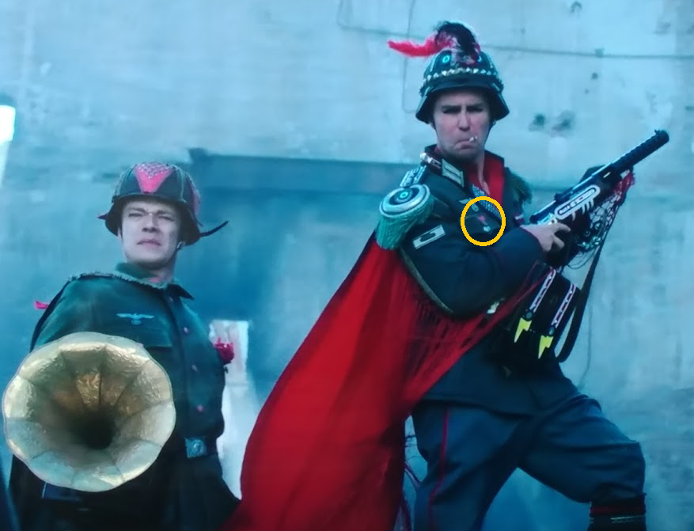 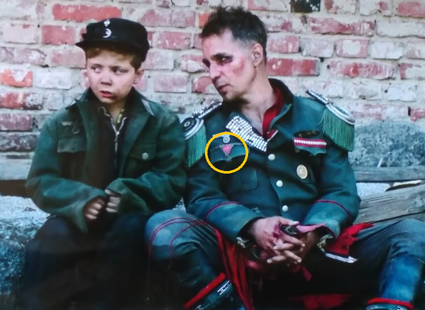
(주황색 원으로 표시된 저 분홍색 역삼각형 마크입니다.)
나찌는 유태인이나 집시, 장애인, 공산주의자에 대해서만 잔혹한 것이 아니었습니다. 동성애자도 발각되는 대로 잡아들여 집시나 공산주의자들을 가둬두는 강제노동 수용소로 보내졌습니다. 나찌는 그런 수용소의 죄수들을 성분에 따라 가슴에 역삼각형 표시를 달아서 구별했는데, 가령 일반 범죄인은 녹색, 정치범은 빨간색, 동성애자는 핑크색으로 표시했습니다. 반사회분자들은 검은색으로 표시했는데, 레즈비언들도 이 부류에 집어넣었습니다. 동성애자들을 차별하는 분들은 자신이 나찌와 똑같은 일을 벌이고 있다는 것을 인지하시기 바랍니다. 저도 개신교인지만, 특히 일부 개신교인들이 이런 점에서 안타까운데, 그 분들은 동성애자들도 우리와 똑같이 하나님께서 직접 만드신 창조물이라는 것을 이해 못하시는 것 같습니다. 아마 동성애자들이 만만한 소수라서 그런가 봅니다.
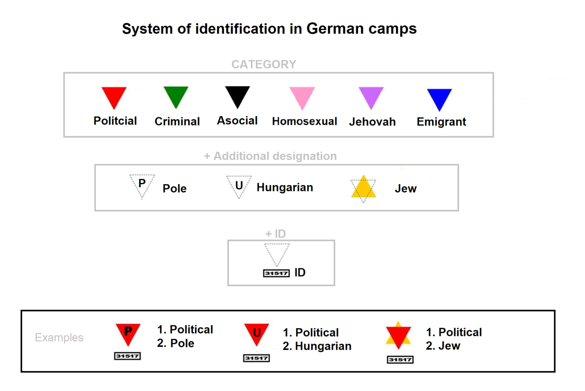
(나찌 독일 강제수용소에서의 색상에 따른 죄수 마크 분류표입니다.)
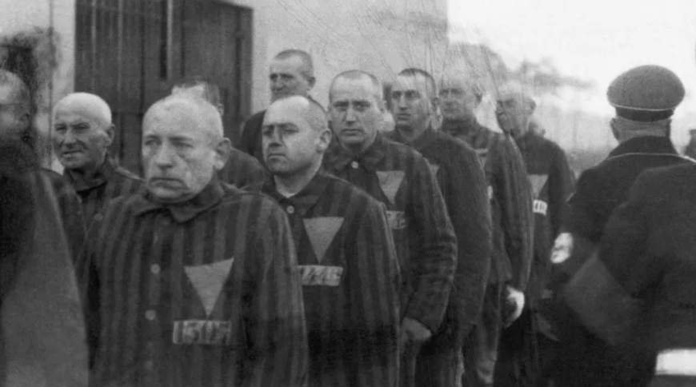
(실제 나찌 치하에서 수감된 게이들입니다. 이들은 매우 가혹한 대우를 받았고, 그 결과 수감자 60% 정도가 사망했습니다.)
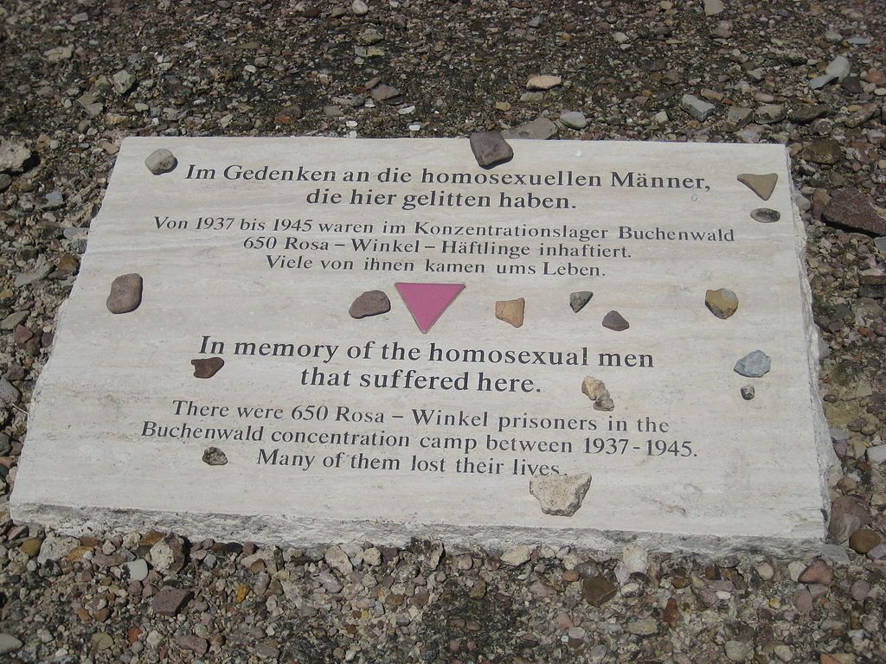
(독일 분쉔발트(Buchenwald) 수용소에서 희생된 동성애자들을 기리는 분홍색 삼각형 기념비입니다.)
4. 정말 독일 소년들은 저런 복장으로 고철을 수집했을까 ?
그랬다면 정말 재미있었겠지만, 당연히 그러지는 않았습니다. 다만 독일에서 소년들을 이용해서 고철을 수집한 것은 사실이라고 하네요. 조조가 뒤집어 쓴 로봇 복장은 파피에-마쉐(papier-mâché, 불어에서 비롯된 단어인데, 씹은 종이란 뜻입니다)라고 해서, 종이와 아교를 짓이겨 만든 재료입니다. 친구 요키가 입은 엉터리 군복도 사실 같은 재료로 만든 것이지요. 감독은 아이들이 입은 각기 다른 옷을 일부러 같은 재료로 만든 것 같습니다.
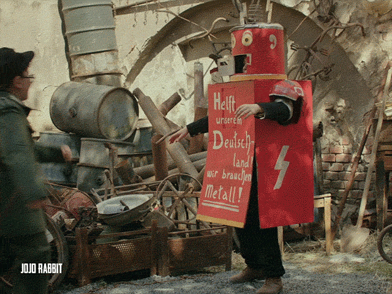
조조의 로봇 복장은 그냥 영화의 코믹 요소로 창작된 것이지만, 조조의 친구 요키가 입은 종이로 만든 군복은 진짜 있었던 것일까요 ? 결론부터 말씀드리면 그건 아닙니다. 하지만 실제로 독일군은 전쟁 말기로 갈 수록 점점 더 여러가지 대용(ersatz) 소재를 많이 사용했습니다. 가령 군복 안감은 원래 리넨(linen)으로 만드는 것인데, 전쟁 말기에는 비스코스(viscose, viskose : 레이욘 계통의 일종의 인조섬유)로 대체되었고, 군모의 챙이나 권총 홀스터 같은 원래 가죽으로 만들어야 하는 것은 프레스토프(presstoff, 일종의 인조가죽, '레자')로 만들어졌습니다. 그런데 비스코스나 프레스토프나 모두 근본적인 원료는 나무 펄프였습니다. 그러니 사실 요키의 종이로 만든 군복과 원료는 같은 셈이지요.
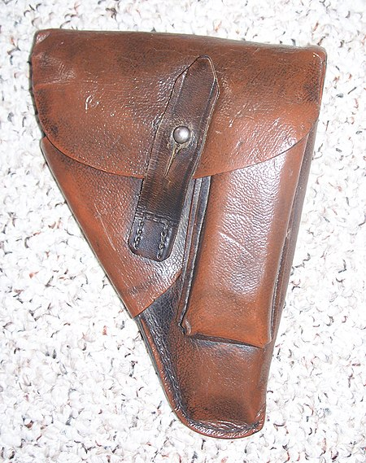
(프레스토프로 만든 권총 홀스터입니다.)
5. 조조와 엘사는 그 이후 잘 살았을까 ?
영화 속에서는 조조가 사는 마을이 어느 동네인지 전혀 나오지 않습니다. 영화 관련 많은 기사들을 뒤져보았으나, 이 영화가 촬영된 곳은 체코의 오래된 마을이라는 것 외에는 딱히 의도적으로 설정된 독일 지방은 없는 것 같더라고요. 실제로 미군과 소련군의 동시 공격을 받았던 마을은 없다고 합니다. 가장 유명한 것은 1945년 4월 25일, 작센(Scahen) 주 엘베(Elbe) 강변 토가우(Torgau)에서의 미소 양군의 만남인데, 이때도 이미 독일군은 항복한 뒤였고 이 만남도 미리 조율되고 사진사들을 동반한 의도적인 만남이었습니다.
(토가우에서의 미소 양군의 만남입니다. 그래서 결국 토가우 마을은 누구 차지가 되었을까요 ? 뒤에 나옵니다.)
이 영화에서 엄마 로지가 즐겨 쓰는 모자는 보통 티롤 모자(Tyrolean hat) 또는 바이에른 모자(Bavarian hat)이라고 불리는 것입니다. 주로 오스트리아 티롤 지방이나 독일 남부 바이에른 지방에서 쓰는 것이지요. 물론 독일 나머지 지방에서도 쓰지 말란 법은 없고 일반적으로는 그냥 독일 모자라고도 알려진 모자이긴 합니다. 아무튼 저 모자 때문에라도 저는 조조가 사는 마을이 바이에른 쪽이 아닌가 싶었어요. 그런데 바이에른에는 소련군이 쳐들어가지 못했고 100% 미군과 영국군이 점령했습니다.
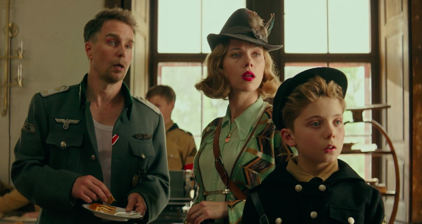
(로지는 티롤 모자 또는 바이에른 모자라고 부르는 저 모자를 계속 쓰고 나오는데, 북부 프로이센이라면 저런 모자를 즐겨 쓸 것 같지는 않습니다.)
아무튼 로지의 모자로 보아 독일 남부 어디 같은데, 그렇게 보면 아마도 조조의 동네는 라이프치히 근처 작센(Sachen) 어디쯤이 아닐까 싶습니다. 소련군이 점령한 곳이 바로 그 근처까지였거든요.
만약 그게 사실이라면, 불행히도 조조와 엘사의 인생은 그리 순탄치 않게 흘러갔을 것입니다. 바로 얄타 회담 때문입니다. 얄타 회담은 우리나라를 남북으로 분단한 악명 높은 회담인데, 여기서는 독일 분단도 논의되었고, 미-영 연합군은 어디어디까지, 그리고 소련군은 어디어디까지를 점령하는 것으로 미-영-소 간에 합의가 되었습니다. 그런데 미군과 영국군의 진격이 더 빨라서, 얄타 회담에서 원래 소련군이 점령하게 되어있던 라이프치히를 포함한 작센 지역 일부와, 에르푸르트를 포함한 튀링겐(Thuringen) 전체가 1945년 5월 초 이전에 미영 연합군에게 점령되었습니다. 아마 조조의 마을도 그래서 원래는 소련군의 공격만 받아야 하는데 미군의 공격과 소련군의 공격을 동시에 받게 된 것이지요.
소련은 당연히 강력히 항의했습니다. 소련이 가진 무기는 베를린이었습니다. 전황을 보면 베를린을 포함한 브란덴부르크 지역은 100% 소련군이 점령하게 되어있었습니다만, 얄타 회담에서 베를린은 그 상징성 때문에라도 연합군과 소련군이 공동으로 관리하기로 합의되었거든요. 그런데 소련군은 남부에서 미영 연합군이 점령한 작센과 튀링겐을 소련군에게 넘기지 않을 경우 베를린은 100% 소련이 점령하겠다고 협박한 것이지요. 그래서 결국 1945년 7월에 연합군은 해당 지역을 소련군에게 넘기고 바이에른으로 후퇴했습니다. 위의 사진에 나온 토가우도 예외가 아니어서, 미군은 철수하고 소련군이 토가우를 비롯한 작센을 다 차지했습니다. 조조와 엘사에게는 매우 나쁜 일이었을 것입니다.
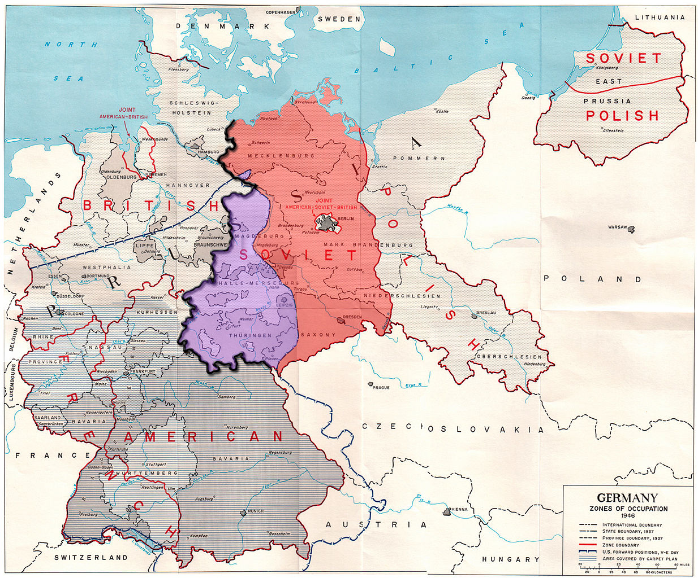
(지도에서 가운데의 보라색 부분이 미영 연합군이 점령했다가 소련군에게 넘겨준 지역입니다.)
6. No feeling is final
저는 이 영화를 스카이XXX라는 Pay TV에서 봤습니다. 처음에 그 가격을 보니 8천원 정도더군요. 저는 약간 자린고비인지라 와이프에게 '그냥 기다리면 2년 후에 OCN 같은 곳에서 공짜로 방영될 테니 그때 보자' 라고 했더니, 와이프가 이렇게 말했습니다.
"그렇게 살지마. 2년 후에 당신이 존재한다는 보장도 없잖아. 삶은 매 순간순간이 소중한거야."
그래서 결국 7590원 내고 조조래빗을 봤습니다. 아... 세상에서 가장 아깝지 않은 7590원이었습니다. 정말 재미있었습니다. 저희 애는 아직 영화 '기생충'을 못 봤는데, 이 영화를 보고는 진짜 잘 만든 영화라면서 '기생충이 이 영화를 이기고 아카데미 작품상을 탔다고?' 라며 놀라더군요.
이 영화 말미에 영화 속에 나오는 릴케의 시 일부가 나옵니다.
Let everything happen to you
beauty and terror.
Just keep going.
No feeling is final.
특히 저 마지막 한줄은 제가 본 자막에서는 이렇게 번역되었더군요. "감정이 이르지 못할 정도로 먼 거리란 없다." 제 개인적인 생각으로는 그건 약간 잘못된 번역이고, 이렇게 번역하는 것이 맞다고 봅니다.
"매 순간마다 느낌이 새로울 수 있다."
즉, 같은 물건 비슷한 장소라도 상황에 따라 같은 느낌이 아니라 전혀 새로운 것으로 다가올 수 있다, 그래서 삶은 매 순간순간이 소중한 것이다 라는 뜻으로 저는 받아들였습니다. 제 와이프가 7590원 아끼지 말고 그냥 이 영화 보자고 하면서 한 말과 너무 똑같은 내용이라서 감탄했습니다.
7. 춤은 자유로운 사람들을 위한 것
이 영화의 엔딩은 정말 마음에 들었어요. 특히 조조와 엄마 로지가 호숫가 제방에서 나누던 대화 때문에라도 더욱 그랬지요.
Jojo: Well, I won't dance. Dancing is for people who don't have a job.
조조: 난 춤 안 출래요. 춤은 일거리가 없는 사람들이나 추는 거라고요.
Rosie: Dancing is for people who are free. It's an escape from all this.
로지: 춤은 자유로운 사람들을 위한 거야. 이 모든 것으로부터의 탈출이지.
맨 마지막 장면은 아래 유튜브에서 감상하세요.

https://menafn.com/1099598681/Sam-Rockwell-on-playing-gay-Nazi-officer-in-Jojo-Rabbit
https://en.wikipedia.org/wiki/Nazi_concentration_camp_badge
https://time.com/5295476/gay-pride-pink-triangle-history/
https://www.history.com/news/pink-triangle-nazi-concentration-camps
https://en.wikipedia.org/wiki/Pink_triangle
https://en.wikipedia.org/wiki/Buchenwald_concentration_camp
https://en.wikipedia.org/wiki/Spectator_shoe
https://en.m.wikipedia.org/wiki/Development_of_the_inner_German_border
https://en.m.wikipedia.org/wiki/Line_of_Contact
https://screenrant.com/jojo-rabbit-historical-fictional-connections/